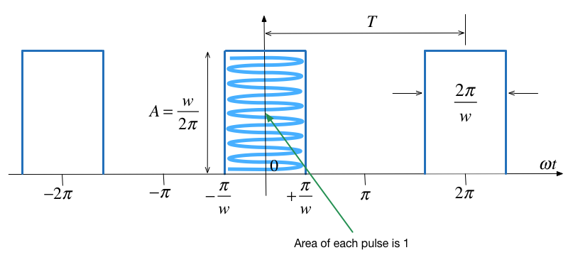

Worksheet 11¶
To accompany Chapter 4.3 Line Spectra and their Applications¶
Colophon¶
This worksheet can be downloaded as a PDF file. We will step through this worksheet in class.
An annotatable copy of the notes for this presentation will be distributed before the second class meeting as Worksheet 9 in the Week 5: Classroom Activities section of the Canvas site. I will also distribute a copy to your personal Worksheets section of the OneNote Class Notebook so that you can add your own notes using OneNote.
You are expected to have at least watched the video presentation of Chapter 4.3 of the notes before coming to class. If you haven’t watch it afterwards!
After class, the lecture recording and the annotated version of the worksheets will be made available through Canvas.
Example 3¶
Compute the exponential Fourier series for the waveform shown below and plot its line spectra.

Solution to example 3¶
The recurrent rectangular pulse is used extensively in digital communication systems. To determine how faithfully such pulses will be transmitted, it is necessary to know the frequency components.
What do we know?
The pulse duration is \(T/w\).
The recurrence interval \(T\) is \(w\) times the pulse duration.
\(w\) is the ratio of pulse repetition time to the pulse duration – normally called the duty cycle.
Coefficients of the Exponential Fourier Series?¶
Given
Is the function even or odd?
Does the signal have half-wave symmetry?
What are the cosequencies of symmetry on the form of the coefficients \(C_k\)?
What function do we actually need to integrate to compute \(C_k\)?
Exponential Fourier Series?¶
Effect of pulse width on frequency spectra¶
Recall pulse width = \(T/w\)
We will use the provided MATLAB script sinc.mlx to explore these in class. You will also need pulse_fs.m. See Canvas/OneNote for copies of these files.
w = 2¶
\(\Omega_0 = 1\) rad/s; \(w = 2\); \(T = 2\pi\) s; \(T/w = \pi\) s.
w = 5¶
\(\Omega_0 = 1\) rad/s; \(w = 5\); \(T = 2\pi\) s; \(T/w = 2\pi/5\) s.
w = 10¶
\(\Omega_0 = 1\) rad/s; \(w = 10\); \(T = 2\pi\) s; \(T/w = \pi/5\) s.
Implications¶
As the width of the pulse reduces the width of the freqency spectra needed to fully describe the signal increases
more bandwidth is needed to transmit the pulse.
Example 4¶
Use the result of Example 1 to compute the exponential Fourier series of the impulse train \(\delta(t\pm 2\pi k)\) shown below

Solution to example 4¶
To solve this we take the previous result and choose amplitude (height) \(A\) so that area of pulse is unity. Then we let width go to zero while maintaining the area of unity. This creates a train of impulses \(\delta(t\pm 2\pi k)\).
and, therefore
Try it!
Proof!¶
From the previous result,
and the pulse width was defined as \(T/w\), that is
Let us take the previous impulse train as a recurrent pulse with amplitude
Pulse with unit area¶
The area of each pulse is then
and the pulse train is as shown below:
New coefficents¶
The coefficients of the Exponential Fourier Series are now:
and as \(\pi/w \to 0\) each recurrent pulse becomes a unit impulse, and the pulse train reduces to a unit impulse train.
Also, recalling that
the coefficents reduce to
That is all coefficients have the same amplitude and thus
Spectrum of Unit Impulse Train¶
The line spectrum of a sequence of unit impulses \(\delta(t \pm kT)\) is shown below:

Another Interesting Result¶
Consider the pulse train agin:
What happens when the pulses to the left and right of the centre pulse become less and less frequent? That is what happens when \(T \to \infty\)?
Well?¶
As \(T\to \infty\) the fundamental frequency \(\Omega_0 \to 0\)
We are then left with just one pulse centred around \(t=0\).
The frequency difference between harmonics also becomes smaller.
Line spectrum becomes a continous function.
This result is the basis of the Fourier Transform which is coming next.
Power in Periodic Signals¶
In your previous courses you may have come across the definitions of Signal Energy, Average Signal Power and Root Mean Square Power:
Parseval’s Theorem¶
Parseval’s Theorem states that the total average power of a periodic signal \(f(t)\) is equal to the sum of the average powers of all its harmonic components.
The power in the \(k\)th harmonic \(C_ke^{jk\Omega_0 t}\) is given by
Since \(P_k = P_{-k}\), the total power of the \(k\)th harmomic is \(2P_k\).
You should note that \(|C_k| = \sqrt{C_k C_k^*}\) so \(|C_k|^2 = C_k C_k^*\).
Parseval’s theorem states that
RMS Power¶
By a similar argument:
Example 5¶
Compute the average power of a pulse train for which the pulse width is \(T/2\) (duty cycle 50%). Use the previous result:
as your starting point.
Power Spectrum¶
The power spectrum of signal is the sequence of average powers in each complex harmonic:
For real periodic signals the power spectrum is a real even sequence as
clear all
cd ../matlab
format compact
imatlab_export_fig('print-svg') % Static svg figures.
A = 1; w = 8; [f,omega] = pulse_fs(A,w,15);
Power spectrum
stem(omega,abs(f).^2)
title('Power Spectrum for pulse width T/8')
ylabel('|C_k|^2')
xlabel('\Omega_0 [rad/s]')
Note that most of the power is concentrated at DC and in the first seven harmonic components. That is in the frequency range \([-14\pi/T,+14\pi/T]\) rad/s.
Total Harmonic Distortion¶
Suppose that a signal that is supposed to be a pure sine wave of amplitude A is distorted as shown below

This can occur in the line voltages of an industrial plant that makes heavy use of nonlineear loads such as electric arc furnaces, solid state relays, motor drives, etc (E.g. Tata Steel!)
THD Defined¶
Clearly, some of the harmonics for \(k\ne \pm 1\) are nonzero. One way to characterize the distortion is to compute the ratio of average power in all the harmonics that “should not be present”, that is for \(k > 1\), to the total average power of the distorted sine wave. The square-root of this ratio is called the total harmonic distortion (THD) of the signal.
If the signal is real and based on a sine wave (that is odd), then \(C_k=0\) and
and we can define the THD as the ratio of the RMS value for all the harmonics for \(K>1\) (the distortion) to the RMS of the fundamental which is $\(\sqrt{2\left|C_1\right|^2}:\)$
Computation of THD¶

Steady-State Response of an LTI System to a Periodic Signal¶
The response of an LTI system with impulse response \(h(t)\) to a complex exponential signal \(e^{st}\) is the same complex exponential multiplied by a complex gain: \(y(t) = H(s)e^{st}\), where:
In particular, for \(s = j\omega\), the output is simply \(y(t)=H(j\omega)e^{j\omega t}\).
The complex functions \(H(s)\) and \(H(j\omega)\) are called the system’s transfer function and frequency response, respectively.
By superposition¶
The output of an LTI system to a periodic function with period \(T\) represented by a Fourier series is given by:
where \(\Omega_0 = T/2\pi\) is the fundamental frequency.
Thus \(y(t)\) is a Fourier series itself with coefficients \(D_k\):
Implications of this important result¶
The effect of an LTI system on a periodic input signal is to modify its Fourier series through a multiplication by its frequency response evaluated at the harmonic frequencies.
Illustration¶
This picture below shows the effect of an LTI system on a periodic input in the frequency domain.

Filtering¶
A consequence of the previous result is that we can design a system that has a desirable frequency spectrum \(H(jk\Omega_0)\) that retains certain frequencies and cuts off others.
We will return to this idea later.
Summary¶
Line spectra
Power in periodic signals
Steady-state response of an LTI system to a periodic signal